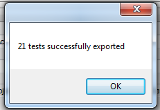
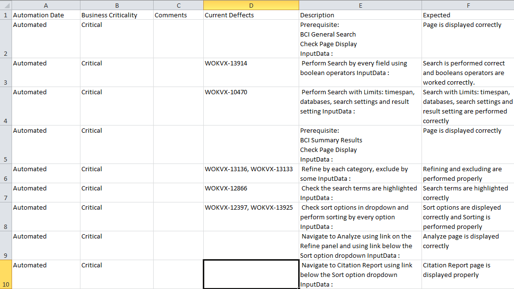

To start extraction process should be implemented following prerequisites :
- Authentication to QC
- Project and Domain selected
- Path to QC folder selected
- Output file selected
- Extorting values selected
Button "Start" will launch extraction process. Button's text will be changed to "In process..." while extraction not completed (NOTE : it can take much of time for big amount of test). Progress bar in the bottom of the main window will show current progress.
Pop up with number of exported tests will be displayed on finish :

File can be found on selected in "Export to" directory or opened by tool top menu
Data Format in Output File :
Each column represent selected values from Exporting list
Each row represents Test Step
